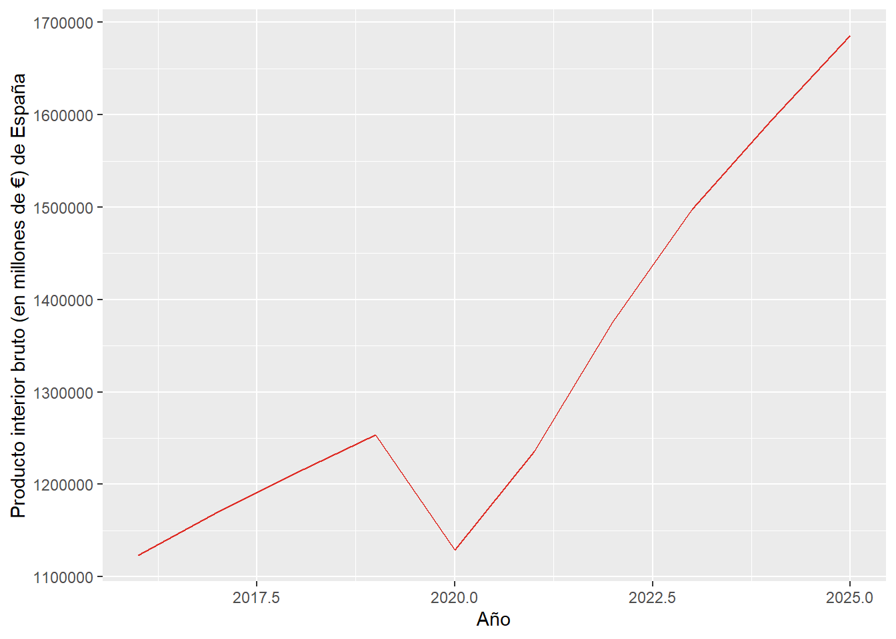
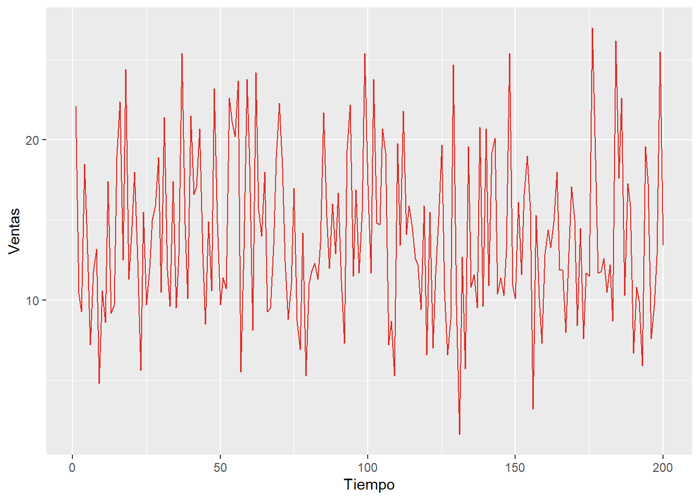
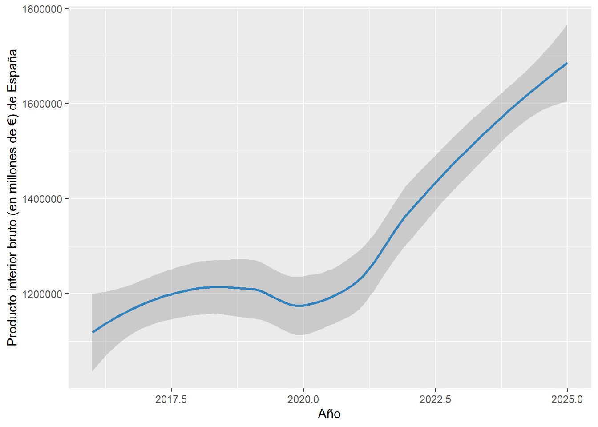
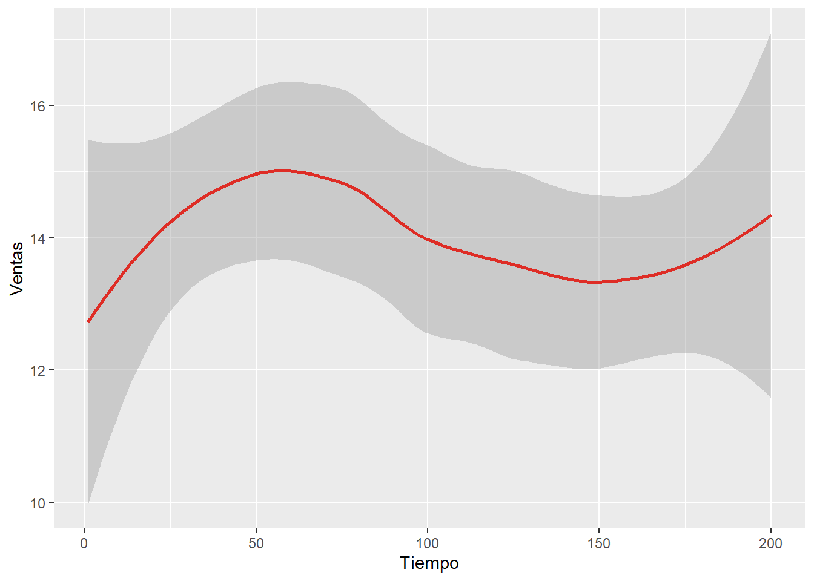

Chapter 6 Representación de gráficos de líneas
Primero vamos a importar las base de datos de series temporales:
## # A tibble: 10 × 2
## Year `Spain (GDP, M€)`
## <dbl> <dbl>
## 1 2016 1122967
## 2 2017 1170024
## 3 2018 1212276
## 4 2019 1253710
## 5 2020 1129214
## 6 2021 1235474
## 7 2022 1375863
## 8 2023 1497761
## 9 2024 1594330
## 10 2025 1685783names(st_econ) <- c("año", "PIB") # cambiamos los nombres de las variables
st_mkt <- st_mkt <- read_excel("datos_mkt.xlsx", 2)## New names:
## • `` -> `...1`## # A tibble: 200 × 5
## ...1 TV Radio Newspaper Sales
## <dbl> <dbl> <dbl> <dbl> <dbl>
## 1 1 230. 37.8 69.2 22.1
## 2 2 44.5 39.3 45.1 10.4
## 3 3 17.2 45.9 69.3 9.3
## 4 4 152. 41.3 58.5 18.5
## 5 5 181. 10.8 58.4 12.9
## 6 6 8.7 48.9 75 7.2
## 7 7 57.5 32.8 23.5 11.8
## 8 8 120. 19.6 11.6 13.2
## 9 9 8.6 2.1 1 4.8
## 10 10 200. 2.6 21.2 10.6
## # ℹ 190 more rowsnames(st_mkt) <- c("tiempo", "tv", "radio", "periodico", "ventas") # cambiamos los nombres de las variablesAhora vamos a crear el gráfico usando los principios aprendidos anteriormente.
linea_econ <- ggplot(st_econ, aes(x = año, y = PIB)) +
geom_line(color = brewer.pal(3, "Reds")[3]) +
labs(y = "Producto interior bruto (en millones de €) de España", x = "Año")
linea_econ
linea_mkt <- ggplot(st_mkt, aes(x = tiempo, y = ventas)) +
geom_line(color = brewer.pal(3, "Reds")[3]) +
labs(x = "Tiempo", y = "Ventas")
linea_mkt
Incluso en vez de geom_line, puede usarse geom_smooth para suavizar la línea:
linea_econ <- ggplot(st_econ, aes(x = año, y = PIB)) +
geom_smooth(color = brewer.pal(3, "Blues")[3]) +
labs(y = "Producto interior bruto (en millones de €) de España", x = "Año")
linea_econ## `geom_smooth()` using method = 'loess' and formula = 'y ~ x'
linea_mkt <- ggplot(st_mkt, aes(x = tiempo, y = ventas)) +
geom_smooth(color = brewer.pal(3, "Reds")[3]) +
labs(x = "Tiempo", y = "Ventas")
linea_mkt## `geom_smooth()` using method = 'loess' and formula = 'y ~ x'